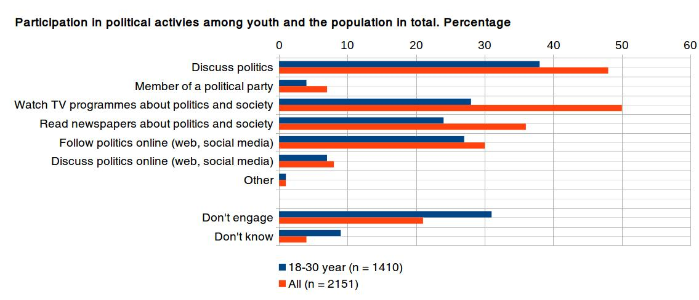
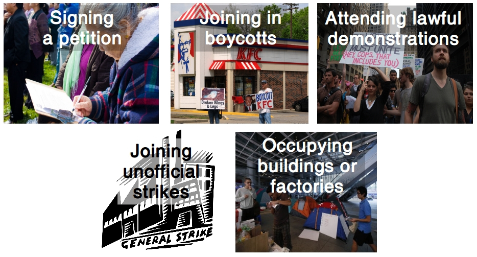
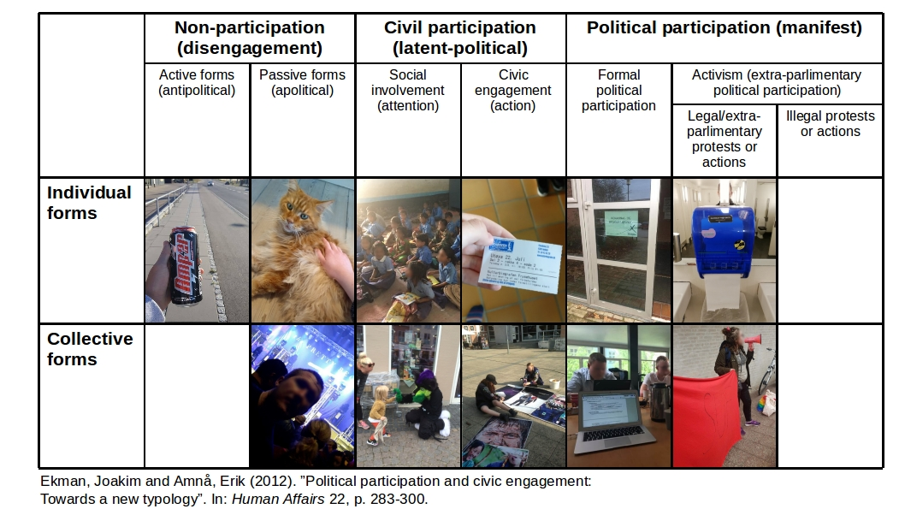

Young people in Denmark today are indifferent and lazy. They do not bother with politics and do not take responsibility for the development of society. This is assertations that we regularly encounter in the public debate. […] On the contrary, we are experiencing a generation of young people who are ambitious and committed - and fully involved in society.
Tuborg Fondet, Mandag Morgen og Netværket af Ungdomsråd (2018). Hvem sagde ung og uengageret?


Benefits:
Challenges:
